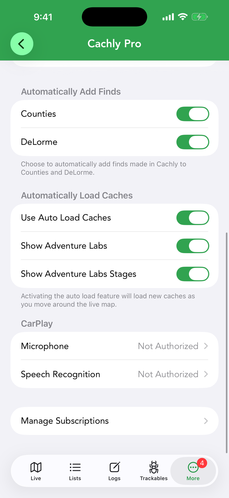
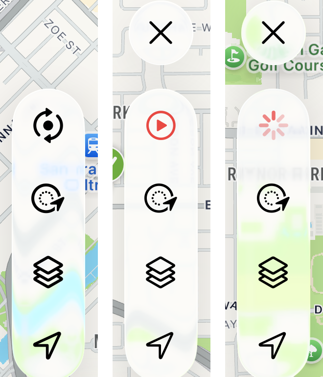
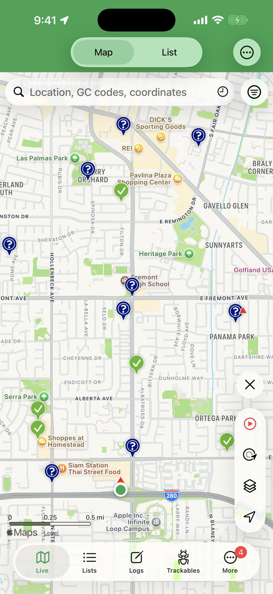

Auto Load Live Map
With Auto Load, the live map fills itself: pan or zoom and Cachly fetches the caches for the new area — no need to tap refresh.
How It Works
Normally the Live map loads caches only when you tap Reload Geocaches in the tool stack. With Auto Load on, Cachly watches the map instead: pan or zoom, pause for a moment, and it requests the caches for the area you’re now looking at. Browsing a region becomes continuous — drag along a trail or across town and the pins keep filling in without another tap.
Auto Load is a PRO feature and works on the Live map. It is not used on the D/T Grid or Counties maps.
Turning It On

Go to More › Settings › Cachly Pro and, under Automatically Load Caches, switch on Use Auto Load Caches. Two extra rows appear only while it is on:
- Show Adventure Labs — include Adventure Lab caches in what auto-loads. Adventure Labs require a geocaching.com Premium membership (see Adventure Labs on the map).
- Show Adventure Labs Stages — load the individual stages of each Adventure as well as the parent. Turning off Show Adventure Labs turns this off too.
The Toolbar Icon

You can always tell whether Auto Load is running from the top button of the tool stack. With Auto Load off it is the usual black refresh (circular arrows) icon. With Auto Load on it becomes a red play button, and while a load is in progress the play button is replaced by a spinner until the caches arrive. The X (clear map) button also stays visible above the stack the whole time Auto Load is on, so you can empty the map whenever you like.
While Auto Load is on, tapping the play button does nothing — loading is automatic — and long-pressing it turns Auto Load back off. If the map is zoomed out too far for a load (see below), the button dims to half strength as a hint to zoom in.
When Caches Load

Auto Load doesn’t fire on every pixel of movement. A load happens when all of the following are true:
- You’re zoomed in far enough. The map must be at zoom level 12 or closer — roughly a view ten miles (15 km) across or smaller. Zoomed out beyond that, nothing loads and the play button dims; zoom back in and it resumes.
- The map has settled. Cachly waits 0.8 seconds after your finger leaves the screen before requesting, so a long drag makes one request at the end rather than a stream of them along the way.
- The view actually changed. Either the zoom level changed, or the map center moved by more than about a quarter of the screen since the last load. Small nudges don’t trigger anything, and a request never starts while another is still running.
Each request covers the visible map area — your search radius setting is not used while Auto Load is on — and asks for the number of caches set by Number of Caches under Settings › Caches & Waypoints › Live Search (50 by default). Caches already on screen are excluded from the request so the new results are genuinely new, and the map is never cleared or re-zoomed by an auto-load: pins accumulate as you explore (the Clear Map On Refresh setting doesn’t apply here). Auto Load fetches lite cache data unless you have turned on Full Cache Data in the same Live Search settings, which is noticeably slower.
Your live search filters still apply, and the Filtering On banner still shows when they’re active. Change a filter while Auto Load is on and Cachly clears the map and immediately reloads the visible area with the new criteria.
Auto Load in CarPlay
CarPlay always auto-loads on its Live map, whether or not the setting above is on. The rules are the same in spirit: the car map must be at zoom level 12 or closer (otherwise a Zoom in to load notice appears over the map), Cachly waits 0.8 seconds after the map stops moving, and a new load happens once the view has shifted by roughly 40% of the screen. Caches already shown are skipped, and CarPlay always loads lite data.